Redesigning Austrip to Boost Booking
Austrip runs Hebrew-speaking tours across Austria. I redesigned its cluttered booking site from the ground up and built it as a working bilingual site.
Problem
Travelers couldn't find the price, the dates or the cancellation policy, so they didn't trust the site enough to book.
Solution
Price and one "Book now" up front, scannable tour pages, real reviews, and a mobile-first booking flow.
Goal
Turn more tour-page visits into booking requests, especially on the phone.
Role UX/UI design, built in code · Tools Figma, Claude · Platform Web + mobile, Hebrew and English
User Research
Who I designed for, and what got in their way
KPIs
How the redesign moves the experience: old site vs. new site
Easy to navigate
Booked on their own
Trust the site
Share of users. “New site” numbers are the targets I set for the redesign.
A/B Testing
If the price stays in view, more people will book.
A · Control
Price buried halfway down the page
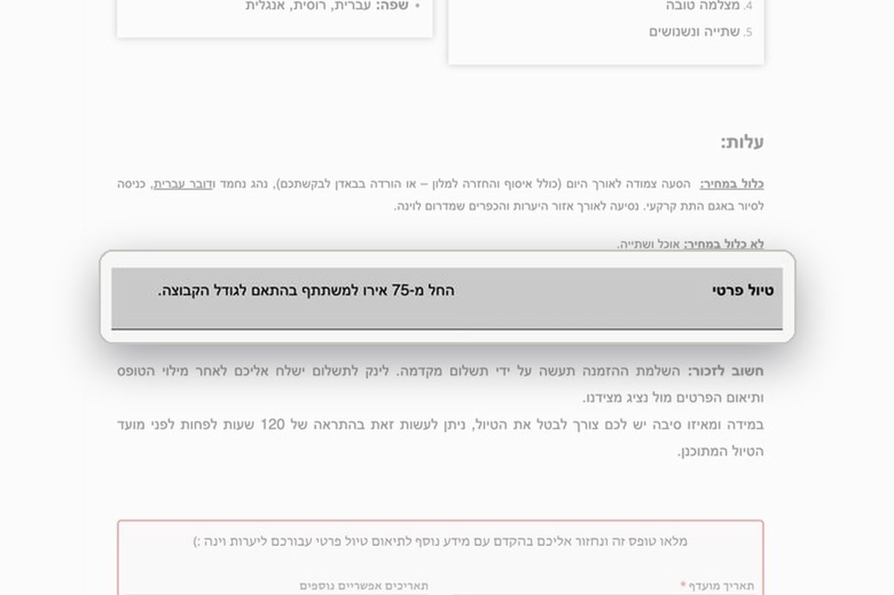
3.1%
booked
B · Variant
Price and “Book” card stays in view
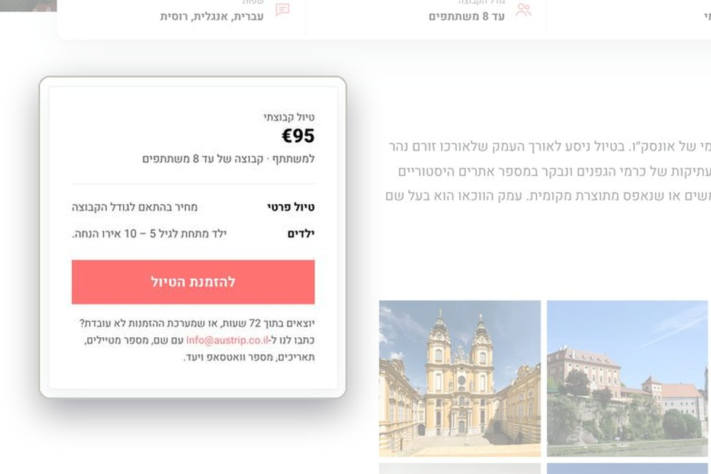
4.6%
booked
B won: +48% bookings
2 weeks, 50/50 split. Expected results I set for the test, to run after launch.
Competitive Research
I studied leading travel sites to learn how they build trust fast. Three patterns stood out:
- Clear hierarchy builds confidence on landing
- Lists and icons instead of dense text
- Visible policies (pickup, cancellation) reduce anxiety
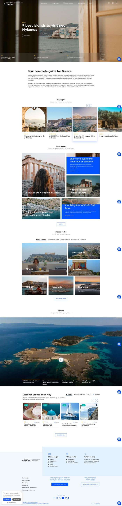
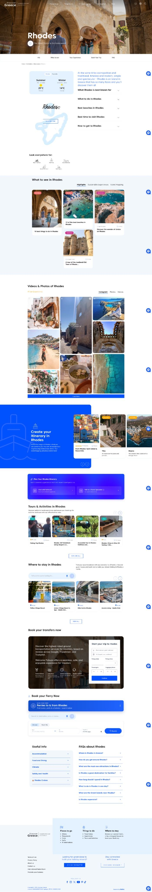
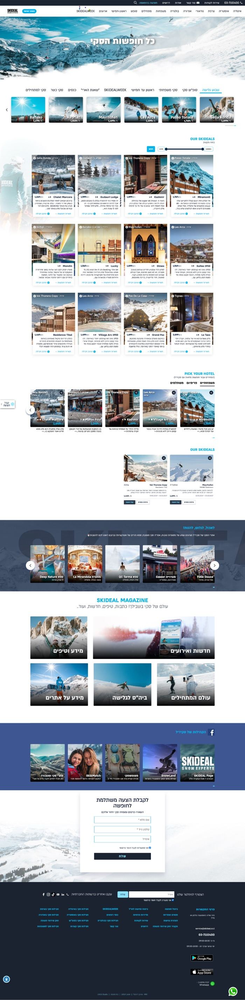
Process & Decisions
- Price, availability and cancellation moved to the top
- Dense paragraphs became short lists and icon sections
- Real reviews and star ratings next to the booking button
- "Book now" always within reach
Early Wireframes
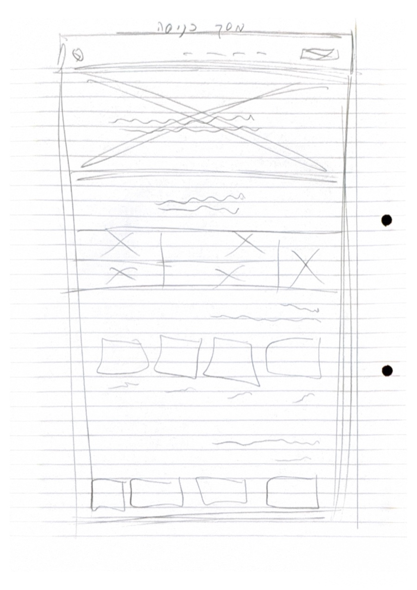
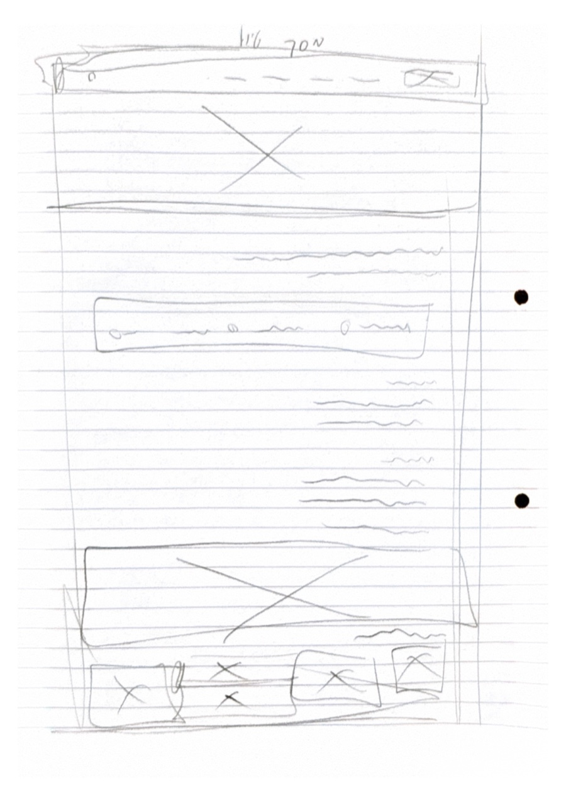
The homepage, before and after
From a wall of banners and links to one photo, one message, and tours grouped by category.
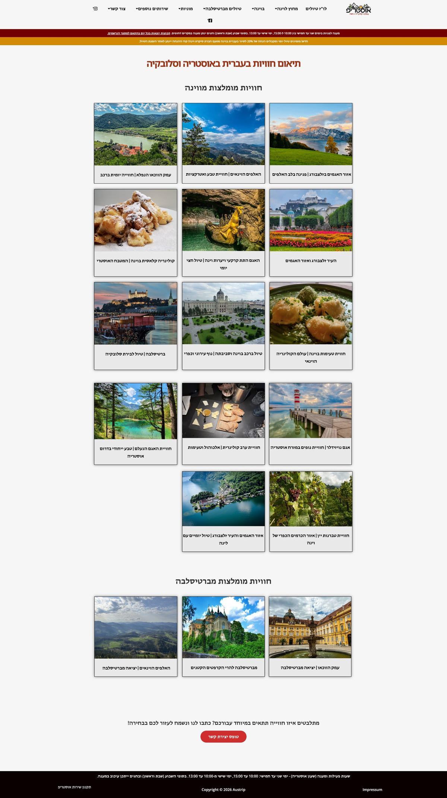
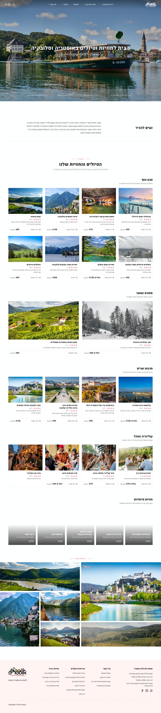
The price and one action, up front
The old tour page buried the price under dense text and repeated its booking form twice. The new one leads with the price, one "Book now", and the key facts.
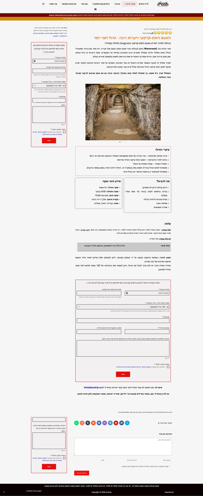
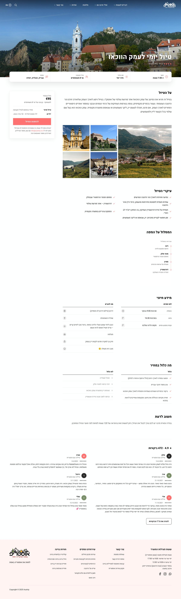
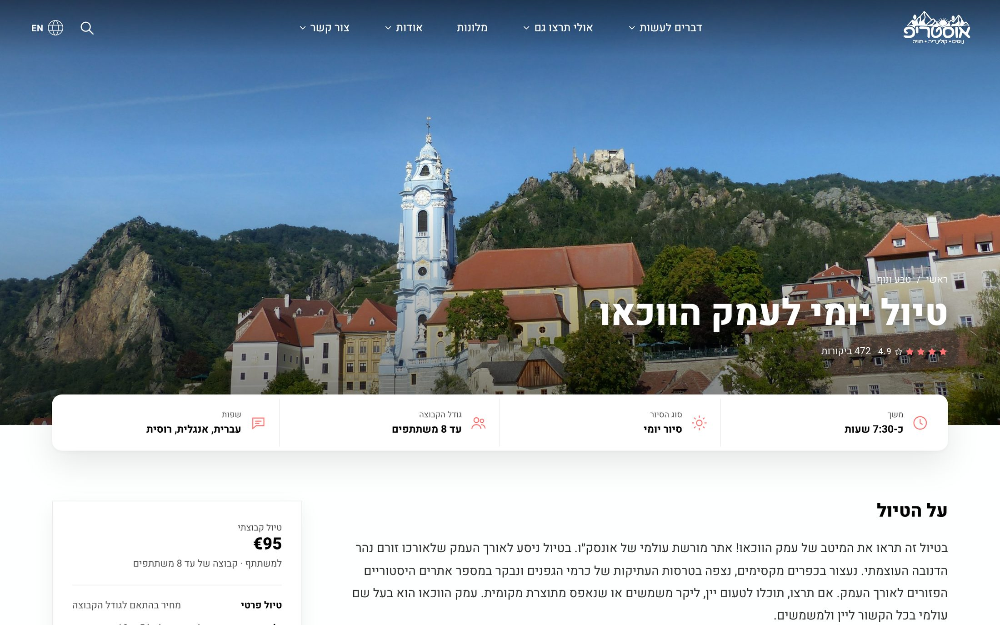
From Figma to a working site
I built the whole site in code with Claude, keeping every original text and price, so the redesign is judged on structure alone.
- 56 pages in Hebrew, each with an English copy
- 17 tour pages with a booking flow
- 11 hotel pages with a quote request form
- 6 category pages, plus taxis and services
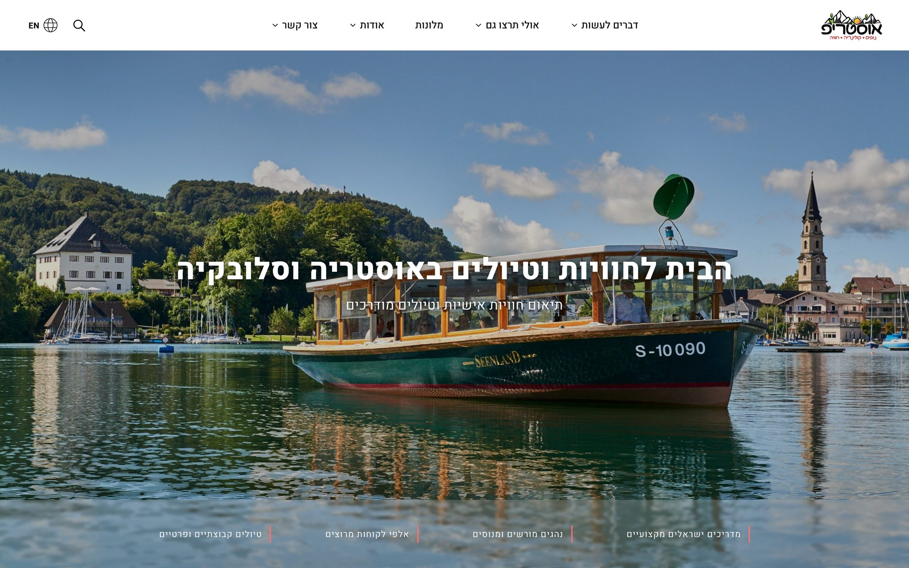
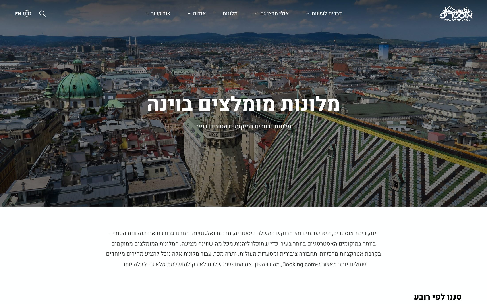
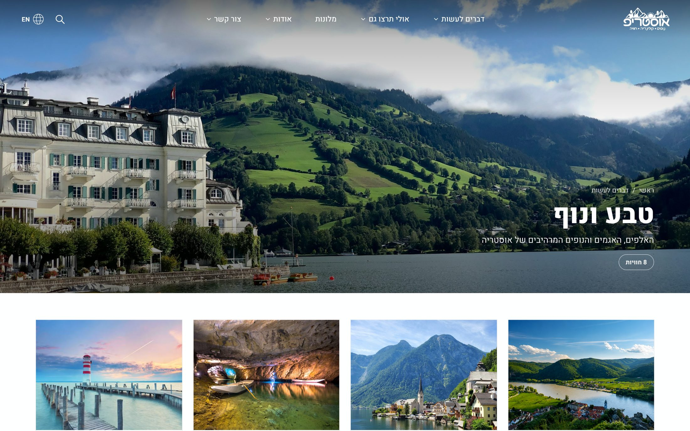
Built for the phone
Mobile first: key facts on top, and the booking bar always in reach.
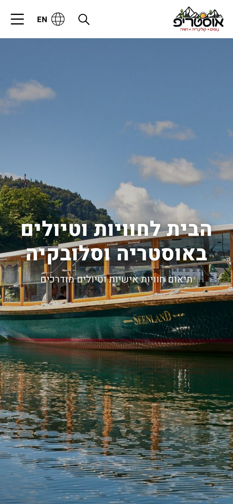
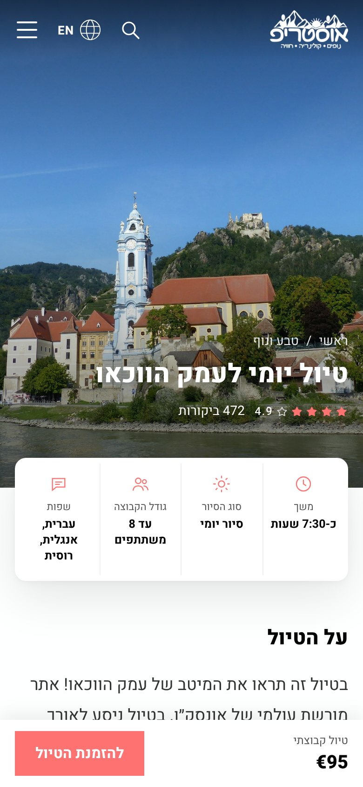
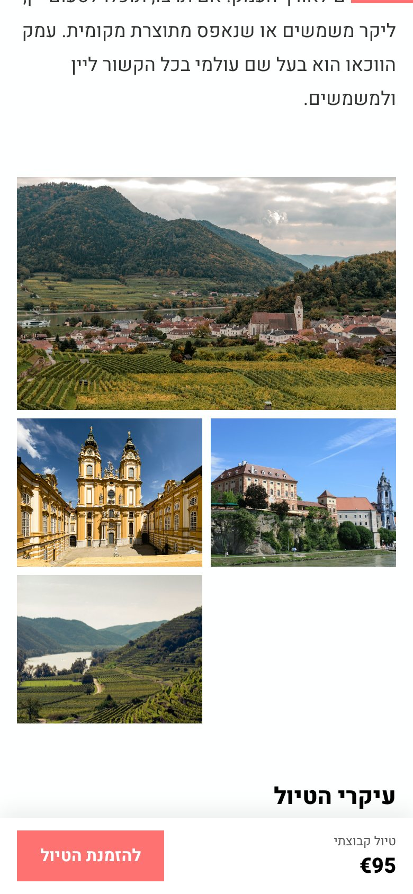
Behind the site
Every form lands in an admin dashboard I designed for the team: Austrip Dashboard →
What I took away
Simplicity builds trust. Removing noise made the site feel safer without changing a word of content.
Research before redesign. Competitors showed the standard before I guessed what "looks good".
Small friction adds up. A form repeated twice is exactly where people drop off.